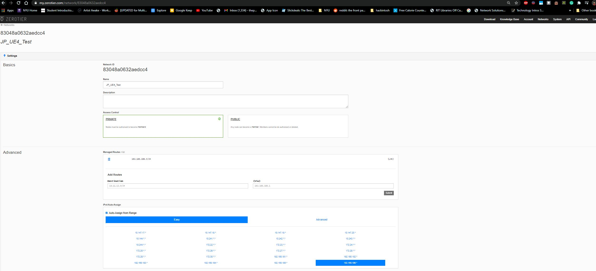
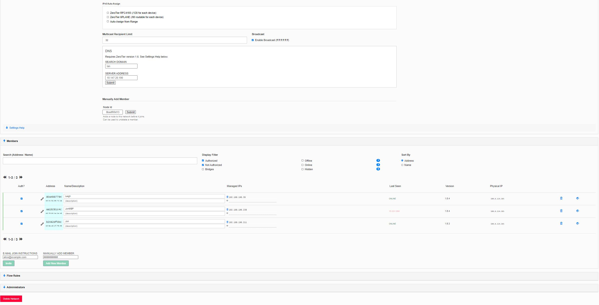
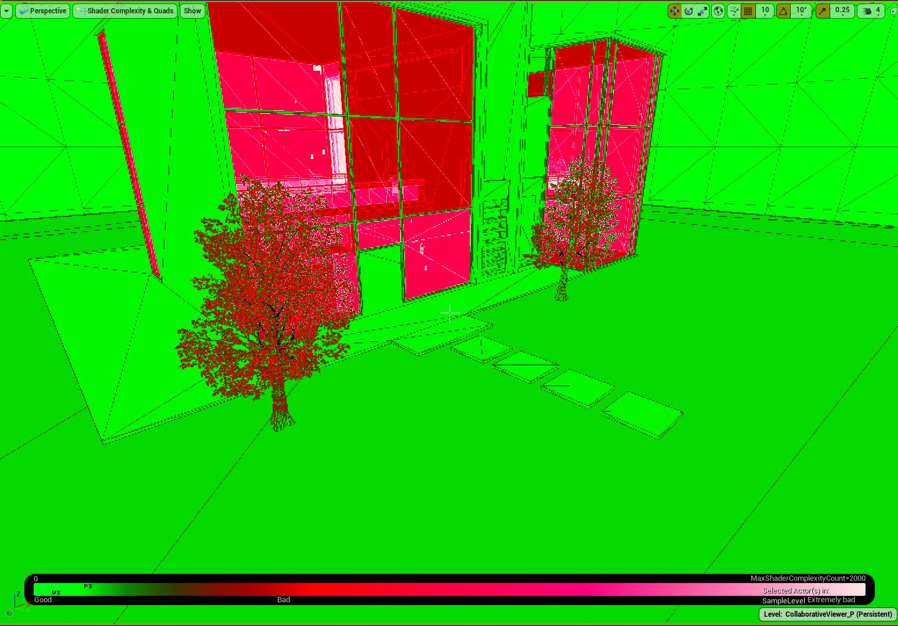
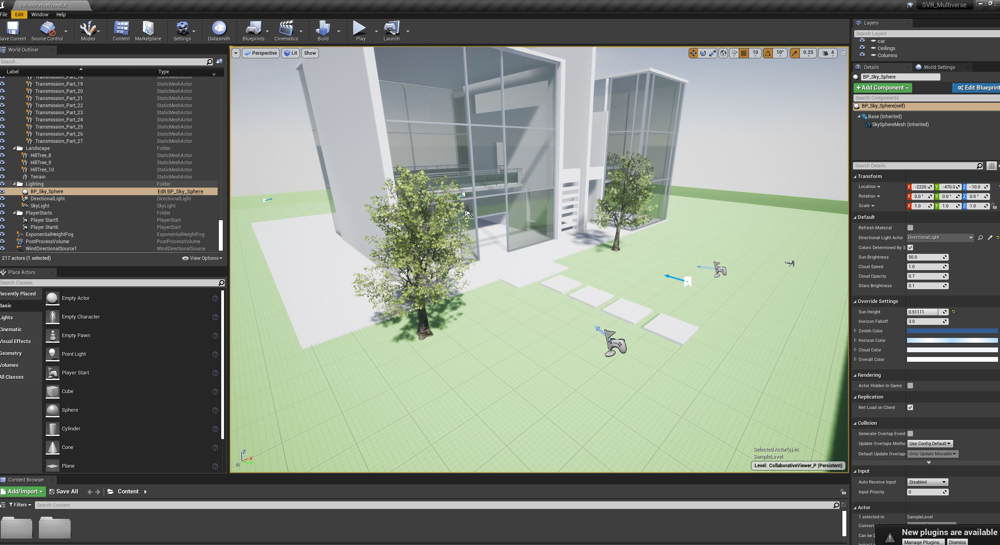
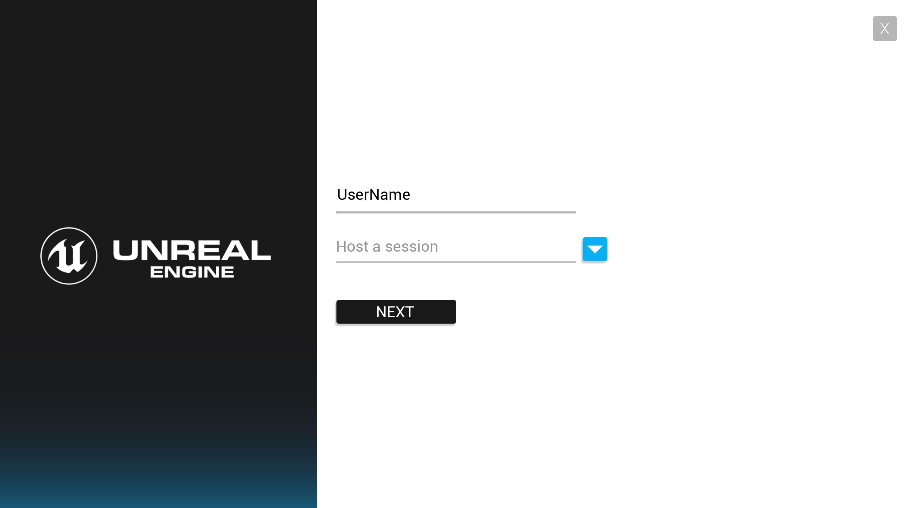
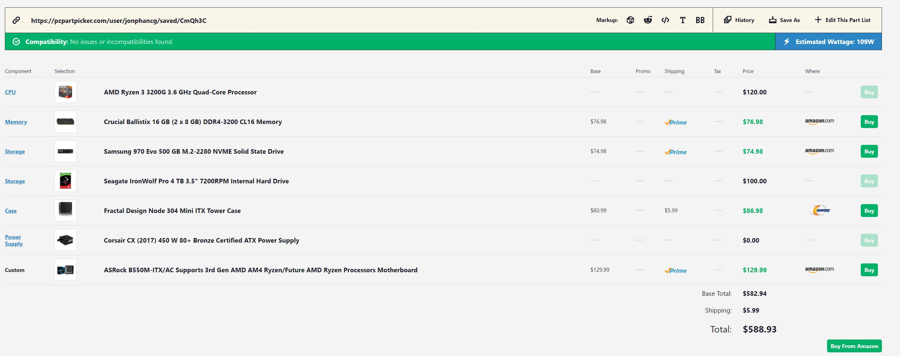
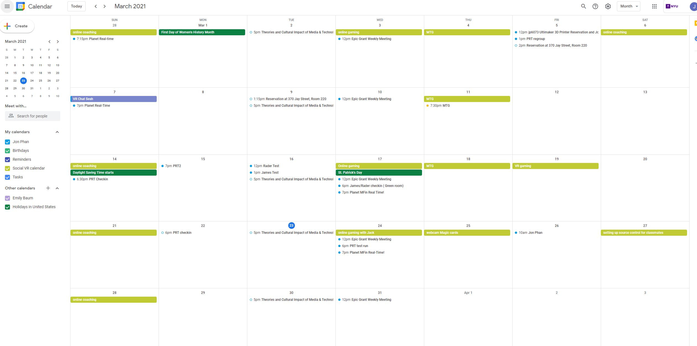

Week 6 Final Project Declaring Week
Shared Dream Setting Up
So far for the shared dream multiverse I've been running some tests with two computers, I setup a VPN using zero tier 1 and configured it so that they were on the same network.  Here you can see that I can add users and accept them so they can access the dream network.  I set up the basic collaberative viewer template in Unreal Engine to try to test things out to see if they worked yet.  I was able to package out the test and try it out but so far I wasn't able to get the multiplayer running yet, I think it's a few tweaks or things I'm missing. I'll be asking around to see what I can do. Once I get that going, I'll make sure it works as a deployed stand alone game on the headsets.  In UE4 its actually quite nice how you can see where you can trim things down to make things run smoother.  For the collaberative work, I did some research on setting up my own source control and looked into my options for network space. I decided that I would build my own server to host the files and the games from my home, which should give me a bit more control and be a good investment for future projects as well. I did the reserach and posted some questions on some online forums for the hardware and after that I put the order in, so I should be good to launch things by the next weekend I think. I was originally going to use tortoise SVN but found out it wasn't on OSX, so I'm going to go forward using Perforce. Hopefully getting all the participants up to speed on how to use P4V won't be too hard, it'll be a very handy skill to have for them going forward as well.  For the pipeline right now, I'm thinking everyone can work independantly for the mean while and get their feet wet in UE4. Luckily its actually very simple to migrate their levels into mine later on. I'll be figuring out level streaming and optimize it for larger groups to make sure things go nice and smoothly. Once we get some a cool looking world, we can start diving into fuctionality and programming in some cool interactions. Thinking about design and ways to make things feel seamless is my goal. Maybe doors that open slowly or long hallways so that the levels can load in nicely or maybe a key is required so not too many things load at the same time. here are some of the resources I've been using to research all of this.https://www.youtube.com/watch?v=HOaDZEG49Z4
https://www.youtube.com/watch?v=IiHsrYaHRHw
https://www.youtube.com/watch?v=QGrRV-11sx4
https://www.youtube.com/watch?v=5hZvKNv8wZo
https://docs.unrealengine.com/en-US/Resources/Templates/CollabViewer/QuickStart/index.html
https://docs.unrealengine.com/en-US/Basics/Levels/LevelsWindow/index.html
https://developer.oculus.com/documentation/unreal/unreal-quick-start-guide-quest/
Social Calendar
 For my virtual socializing this week, I pretty much did the same as usual, played video games with friends, played webcam cards games with friends, did a bunch of webcam meetings, and got a little bit of a break from Planet Real-Time since we didn't do a show last week because of NYU spring break. I did get to work on some UE4 documentation instead which is part of my research assistanceship position.home
while (!deck.isInOrder()) {
print 'Iteration ' + i;
deck.shuffle();
i++;
}
print 'It took ' + i + ' iterations to sort the deck.';